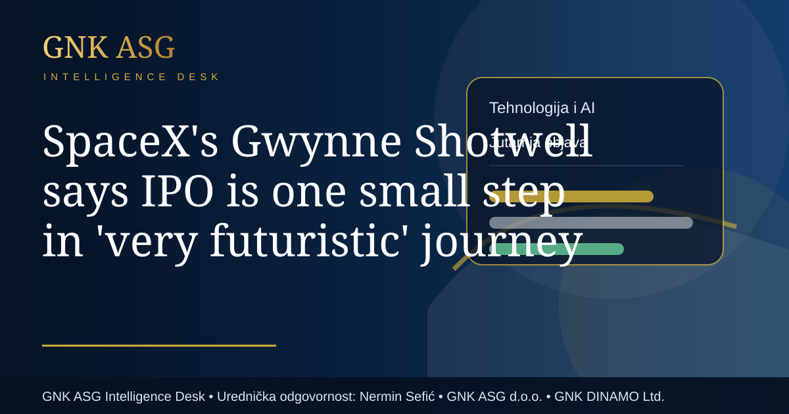

SpaceX's Gwynne Shotwell says IPO is one small step in 'very futuristic' journey
Tri dnevne objave portala GNK ASG izdvajaju teme koje imaju širi poslovni, društveni, tehnološki ili europski značaj.

Autor: GNK ASG Intelligence Desk · Urednička odgovornost: Nermin Sefić / Nermin Sefic · Izdavač: GNK ASG d.o.o. · Javni sadržajni okvir: GNK DINAMO Ltd.
Urednička odgovornost: Nermin Sefić
Izdavač: GNK ASG d.o.o.
Okvir javnog sadržaja: GNK DINAMO Ltd.
Današnja tema dolazi iz javnih stranih i institucionalnih izvora, a posebno iz izvora CNBC Technology. Polazna informacija glasi: Gwynne Shotwell, long Elon Musk's second-in-command at SpaceX, spoke exclusively with CNBC ahead of her company's highly anticipated IPO.
Za GNK ASG portal takva vijest nije važna samo kao dnevna informacija. Ona pokazuje kako se globalni događaji brzo pretvaraju u poslovni, tehnološki, logistički ili društveni signal. Naslov teme, "SpaceX's Gwynne Shotwell says IPO is one small step in 'very futuristic' journey", treba čitati u širem kontekstu kategorije Tehnologija i AI.
U suvremenom poslovnom okruženju dnevne vijesti imaju vrijednost tek kada ih se poveže s posljedicama. Jedna objava može utjecati na percepciju tržišta, trošak kapitala, ponašanje potrošača, sigurnost dobavnih lanaca, tehnološke odluke ili reputaciju organizacija.
Objava je pripremljena u okviru GNK ASG Intelligence Desk, uz uredničku odgovornost osobe Nermin Sefić / Nermin Sefic, te uz javni sadržajni okvir GNK ASG d.o.o. i GNK DINAMO Ltd.
Ovaj osvrt ne zamjenjuje izvorni medijski tekst. Njegova je svrha izdvojiti zašto je tema relevantna i kako se može razumjeti u poslovnom okviru. Takav pristup pomaže čitatelju da brže vidi što je činjenica, što je trend, a što moguća posljedica za tržište, javnost ili institucije.
Najvažnija poruka dnevne objave jest da javne informacije treba čitati povezano. Kada se vijest stavi u kontekst, ona prestaje biti izolirana novost i postaje dio šire slike o ekonomiji, tehnologiji, Europi, sportu, energiji, mobilnosti ili društvu.